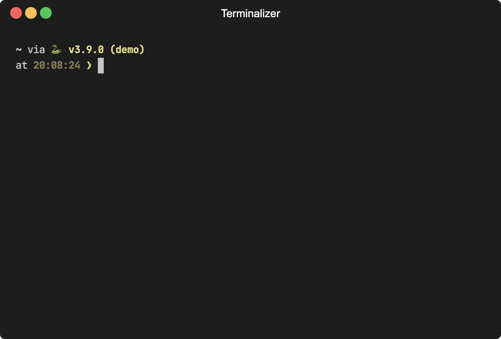

reprexlite: Python reproducible examples for sharing¶


reprexlite is a tool for rendering reproducible examples of Python code for sharing. With a convenient CLI and lightweight dependencies, you can quickly get it up and running in any virtual environment.

- Paste or type some Python code that you're interested in sharing.
- reprexlite will execute that code in an isolated namespace. Any returned values or standard output will be captured and displayed as comments below their associated code.
- The rendered reprex will be printed for you to share. Its format can be easily copied, pasted, and run as-is by someone else. Here's an example of an outputted reprex:
from itertools import product
grid = list(product([1, 2, 3], [8, 16]))
grid
#> [(1, 8), (1, 16), (2, 8), (2, 16), (3, 8), (3, 16)]
list(zip(*grid))
#> [(1, 1, 2, 2, 3, 3), (8, 16, 8, 16, 8, 16)]
Writing a good reprex takes thought and effort (see "Reprex Do's and Don'ts" for tips). The goal of reprexlite is to be a tool that seamlessly handles the mechanical stuff, so you can devote your full attention to the important, creative work of writing the content.
Reprex-style code formatting—namely, with outputs as comments—is also great for documentation. Users can copy and run with no modification. Consider using reprexlite when writing your documentation instead of copying code with >>> prompts from an interactive Python shell.
reprexlite is a lightweight alternative to reprexpy and is similarly meant as a port of the R package reprex.
Why reproducible examples?¶
If you're asking for help or reporting a bug, you are more likely to succeed in getting others to help you if you include a good reprex. If you're writing documentation, your readers will appreciate examples that they can easily run. See "Design Philosophy" for more on both "Why reproducible examples?" and "Why reprexlite?"
Installation¶
reprexlite is available on PyPI:
pip install reprexlite
Optional dependencies can be specified using the "extras" mechanism, e.g., reprexlite[black]. Available extras are:
black: for optionally autoformatting your codeipython: to use the%%reprexcell magic in IPython/Jupyterpygments: for syntax highlighting and the RTF venue
Development version¶
The development version of reprexlite is available on GitHub:
pip install https://github.com/jayqi/reprexlite.git#egg=reprexlite
Quick usage¶
Command-line interface¶
The primary way to use reprexlite is through the CLI. It allows you to create a reprex without entering a Python session. Simply invoke the command:
reprex
This will take you into your system's default command-line text editor where you can type or paste your Python code. On macOS, for example, this will be vim. You can set your default editor using the $EDITOR environment variable—I'm personally a fan of nano.
Once you're done, reprexlite will print out your reprex to console.
To see available options, use the --help flag.
Python library¶
The same functionality as the CLI is also available from the reprex function with an equivalent API. Simply pass a string with your code, and it will print out the reprex, as well as return a Reprex object that contains all the data and formatting machinery. See the API documentation for more details.
from reprexlite import reprex
code = """
from itertools import product
grid = list(product([1, 2, 3], [8, 16]))
grid
list(zip(*grid))
"""
reprex(code)
#> ```python
#> from itertools import product
#>
#> grid = list(product([1, 2, 3], [8, 16]))
#> grid
#> #> [(1, 8), (1, 16), (2, 8), (2, 16), (3, 8), (3, 16)]
#> list(zip(*grid))
#> #> [(1, 1, 2, 2, 3, 3), (8, 16, 8, 16, 8, 16)]
#> ```
#>
#> <sup>Created at 2021-02-26 00:32:00 PST by [reprexlite](https://github.com/jayqi/reprexlite) v0.3.0</sup>
#> <reprexlite.formatting.GitHubReprex object at 0x109059f10>
IPython/Jupyter Cell Magic¶
reprexlite has an optional IPython extension with a %%reprex cell magic. That means you can easily create a reprex in an IPython shell (requires IPython), in Jupyter (requires Jupyter), or in VS Code's Interactive Python window (requires ipykernel).
To use, simply load the extension with
%%load_ext reprexlite
and then put %%reprex at the top of a cell you want to create a reprex for:
%%reprex
from itertools import product
grid = list(product([1, 2, 3], [8, 16]))
grid
list(zip(*grid))
The magic accepts the same inline option flags as the CLI. Use the line magic %reprex (single-%) to print out help. See the documentation for more details.